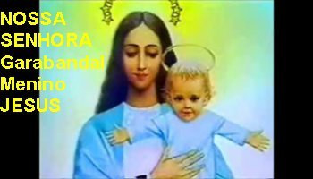
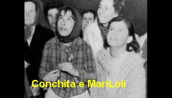
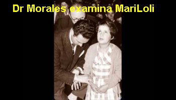
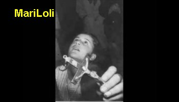
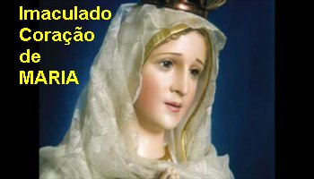

DERRADEIRA NOTÍCIA
Mari Loli Mazón Gonzalez, uma das quatro videntes, que vinha enfrentando uma doença difícil há vários anos, numa locução interior recebeu da VIRGEM MARIA, a notícia do fim de seus sofrimentos terrenos e de seu retorno aos braços do CRIADOR, na eternidade. No dia 20 de Abril de 2009, faleceu num Hospital em Santander, na Espanha, com 48 anos de idade.





PALAVRAS FINAIS
As Aparições de NOSSA SENHORA e do ARCANJO SÃO MIGUEL em Garabandal, na Espanha, são verdades incontestáveis e foram perfeitamente acolhidas pela Igreja, que está profundamente ciente das MENSAGENS e do AVISO DIVINO. O atraso na oficialização dos fatos, se prende unicamente a razões burocráticas, que não atingem e nem maculam o mérito da questão. Isto porque, as palavras do ARCANJO e da VIRGEM MARIA, como todas as revelações ocorridas, são manifestações que retratam e repetem acontecimentos semelhantes, que se encontram descritos nas Sagradas Escrituras, reforçando, mais uma vez, o desapontamento do CRIADOR em relação à humanidade.
No Evangelho de São Lucas, o Apóstolo nos apresenta João Batista, o destemido anunciador do Messias. Ele pregava a necessidade da humanidade abandonar o pecado a fim de alcançar a amizade de DEUS, e com este objetivo realizava um Batismo de Penitência como inicio à conversão do coração do povo que esperava a Vinda do SENHOR. E João inflamado pelo Amor DIVINO gritava pelo deserto: “Preparai o caminho do SENHOR, endireitai as suas veredas. Todo vale será aterrado, toda montanha e colina serão rebaixadas; as passagens tortuosas ficarão retas e os caminhos acidentados serão aplainados. E todas as pessoas verão a salvação de DEUS”. (Lc 3, 4-6)
Entendendo as palavras de João Batista, ele estava gritando para o “povo endireitar as suas vidas tortuosas, aterrar no vale da vida todos os buracos e depressões da maldade, da insensatez e da volúpia; de serem rebaixadas todas as montanhas e colinas do egoísmo, do orgulho e da vaidade humana; e serem retificados os caminhos tortuosos delineados pela mentira, ganância e pela ambição; assim, todas as pessoas verão a salvação de DEUS”
Esta realidade nos outorga a responsabilidade e o dever, como filhos do CRIADOR, de cultivar a fidelidade da crença e do amor a DEUS, principalmente buscando conhecer as palavras do SENHOR pelos Livros Sagrados e também, sabermos extrair dos acontecimentos aqui descritos, mesmo aqueles que se misturam com a simplicidade e infantilidade das meninas, o conhecimento da Verdade DIVINA, desfrutando da grandeza incomensurável do AMOR DE DEUS, que inventou cada um de nós e quer a nossa salvação. Isto porque, estas Manifestações Sobrenaturais, nos traz uma derradeira chamada do SENHOR DEUS aos nossos sentimentos, um sonoro grito ao ouvido de nosso coração, despertando de maneira impressionante todas as almas, alertando-nos dos deveres e do cumprimento das nossas responsabilidades, de maneira a podermos delinear um caminho de santidade, essencial a vida de cada um. Todos nós somos convidados a nos esforçarmos em realizar os sonhos e alcançarmos os nossos objetivos e sucessos, sem dúvida, mas jamais, sem nos distanciarmos ou omitirmos a nossa atenção e carinhos, devidos aos DOIS SAGRADOS CORAÇÕES DE JESUS E MARIA. Sem ELES, a vida é vazia e facilmente se corrompe e se destrói no turbilhão das maldades e das cobiças humanas. ELES são o estímulo e a proteção permanente, sempre visível e atuante no quotidiano, um real apoio que nos auxilia a transpor e superar todos os obstáculos e dificuldades que surgem. Porque ELES querem o nosso bem e nos amam de modo infinito, sobretudo, querem que tenhamos uma existência harmoniosa, pacífica, vivendo como irmãos, exercitando um amor honesto e perseverante, edificando no coração baluartes seguros de fraternidade e doação, que possibilitarão existir em nossa vida, a maravilhosa presença em plenitude, da ternura do AMOR DE DEUS.
Assim sendo,
procurando entender o motivo das Mensagens, do AVISO e do GRANDE MILAGRE que o SENHOR
realizará em Garabandal, somos convidados a assumir um posicionamento correto, buscando
colaborar e auxiliar de alguma forma, para que o mundo se transforme
e seja a expressão mais próxima do modelo que DEUS quer para a existência de todos
nós. As Manifestações Sobrenaturais que lá aconteceram, além de visar a conversão da
humanidade, tem um sentido primordialmente Eucarístico, ou seja, é a Vontade do SENHOR
que fosse divulgado com evidência o Sacramento que ELE instituiu para permanecer
junto de nós, para a nossa santificação e salvação, desde quando Ressuscitou para junto do PAI ETERNO.
Isto podemos identificar com clareza desde as primeiras Aparições do Arcanjo São Miguel,
levando hóstias não consagradas a fim de ensinar as meninas a Comungar corretamente,
ensinando-lhes de modo fácil a Doutrina do Sacramento da Eucaristia. Vimos depois, que
estando a Conchita devidamente preparada e em jejum, o Arcanjo lhe deu a Sagrada Comunhão,
com Hóstia Consagrada retirada do sacrário de uma Igreja na Terra. O acontecimento foi
fotografado e filmado por muitas pessoas. O Arcanjo seguiu dando a Sagrada Comunhão as
quatro meninas durante muito tempo. Com certeza, uma forte insinuação para nos
prepararmos e Comungarmos todos os dias.
E mais, o costume dos habitantes de Garabandal de rezar uma "Estação", é uma
simpática prática espanhola de Devoção a Eucaristia. E ainda, NOSSA SENHORA mandou Conchita
(que durante as Aparições recebia os conselhos da VIRGEM MARIA em benefício de toda humanidade)
deixar a preguiça de lado e adorar com frequência JESUS no Santíssimo Sacramento. Sem a menor
dúvida, Nossa MÃE SANTÍSSIMA também quer que cada um de nós façamos o mesmo.
Depois NOSSA SENHORA disse as meninas, que o SENHOR vai realizar um GRANDE MILAGRE, numa
quinta-feira, num dia em que se comemora a Festa de um Santo Mártir da Eucaristia, e que
o GRANDE MILAGRE também terá um motivo Eucarístico. Desse modo, está bem claro que, as
Aparições em Garabandal tiveram o objetivo determinado de conversão das pessoas,
para que todos compreendam o imenso e dedicado Amor de DEUS por cada um de nós,
e assim, possam entender profundamente a Sagrada Eucaristia, o valor infinito do
Sacramento, sabendo que Ele é o próprio DEUS, presente de maneira maravilhosa, adorável
e misteriosa, fazendo com que a Sagrada Comunhão seja essencialmente conhecida,
para que seja verdadeiramente amada, respeitada e louvada por toda humanidade.
JESUS não quis deixar a humanidade órfã quando ressuscitou e retornou ao PAI ETERNO, instituiu a Sagrada Eucaristia. Durante a Santa Missa, no momento da Consagração, pela ação do ESPÍRITO SANTO acontece a transubstanciação, ou seja, o pão e o vinho são transformados no Corpo, Sangue, Alma e Divindade do SENHOR JESUS, o nosso próprio DEUS, para alimento espiritual do mundo inteiro. Então, ELE deixou-nos a Sagrada Comunhão que é ELE Mesmo, alimento precioso e sagrado, que contém o seu estímulo e a sua força, para nos impulsionar e inspirar no cotidiano, revigorando a vontade e robustecendo a nossa fé e fidelidade. Todavia, este Sacramento não é devidamente conhecido e nem respeitado pela maioria da humanidade. Apesar de ter sido instituído para a união de todos, permanece esquecido no sacrário, abandonado e sem qualquer afeto, sofrendo a terrível indiferença das pessoas, atitude de abandono que em si já é totalmente insuportável a qualquer ser humano, imagine então o quão triste e detestável deve ser para ELE, que é o nosso DEUS e CRIADOR, considerando a grandeza infinita de Seu sublime e dedicado Amor, de Sua incomensurável e bondosa misericórdia que sempre derramou generosamente graças sobre a humanidade de todas as gerações!
Na atualidade, a apostasia, a ganância, a violência e a impiedade que vigorosamente atuam em todas as partes, e que foram preditas pela Bíblia e nos anúncios Divinos, onde foram tristemente lembrados nas inumeráveis manifestações sobrenaturais ocorridas em todos os Continentes, ao longo dos séculos, são fatos terríveis, perturbadores, estarrecedores e lamentáveis, que gritam por um decidido ponto final. São na verdade, um anúncio revelador da ausência de DEUS na vida das pessoas.
Assim sendo, alguma coisa precisa ser feita com urgência. Será necessário acolher atenciosamente a realidade anunciada e procurar com empenho, se preparar dignamente para as ocorrências que se aproxima. Pois só assim, começaremos a dar nossa resposta de amor a NOSSO SENHOR, que ansiosamente espera a reforma de nosso interior, convertendo e limpando a nossa alma, a fim de podermos trilhar um seguro caminho de santidade, orientado na Sua Divina direção.
E sem dúvida, o caminho mais curto para acolhermos respeitosamente a Vontade DIVINA, passa por uma preparação digna através da Confissão Sacramental, que é o ponto de partida para a conversão de nossa existência, vivendo de conformidade com as Leis de DEUS.
Este será o caminho ideal, acompanhado do fervoroso, perseverante e diário exercício das orações, sobretudo, com aquela oração mais particular, mais íntima, que nasce no fundo da alma e desliza na humildade silenciosa dos lábios, durante o acompanhamento de uma Santa Missa, que nos enseja completar a limpeza de nossas transgressões, apesar dos nossos muitos e terríveis pecados. E apenas, como um aditivo a preparação, sugerimos rezar a linda oração de súplica escrita por São Tomás de Aquino, porque é um texto que traduz a sinceridade de uma alma que busca a sua conversão, revelando um coração sinceramente arrependido e ansioso pelo perdão Divino, para melhor receber fielmente e com dignidade, o SENHOR DEUS na Hóstia Consagrada:
"Ó DEUS eterno e todo-poderoso, eis que me aproximo do Sacramento do Vosso FILHO Único, NOSSO SENHOR JESUS CRISTO. Impuro, venho à fonte da misericórdia; cego, venho à Luz da eterna claridade; pobre e indigente, venho ao SENHOR do Céu e da Terra. Imploro, pois, a abundância de Vossa imensa liberalidade para que Vos digneis curar minha fraqueza, lavar minhas manchas, iluminar minha cegueira, enriquecer minha pobreza e vestir minha nudez. Que eu receba o Pão dos Anjos, o Rei dos reis e o SENHOR dos senhores, com o respeito e a humildade, com a contrição e devoção, a pureza e a fé, o propósito e a intenção que convêm à salvação de minha alma. Dai-me receber não só o Sacramento do Corpo e do Sangue do SENHOR, mas também seu efeito e sua força. Ó DEUS de mansidão, dai-me acolher com tais disposições o Corpo que Vosso FILHO Único, NOSSO SENHOR JESUS CRISTO, recebeu da SANTÍSSIMA VIRGEM MARIA, que eu seja incorporado a seu Corpo Místico e contado entre seus Membros. Ó PAI cheio de Amor, fazei que recebendo agora o Vosso FILHO sob o véu do Sacramento, possa na eternidade contemplá-lo face a face. ELE, que Convosco vive e reina para sempre. Amém".
ORAÇÃO A NOSSA SENHORA DO CARMO DE GARABANDAL
Ó Mãe de bondade
e misericórdia, SANTA VIRGEM MARIA, eu, pobre e indigno pecador, a Vós recorro com
todo o afeto do meu coração, implorando à Vossa piedade. Assim como estivestes de
pé junto à Cruz do Vosso FILHO JESUS, também Vos digneis assistir-me, não só a mim,
pobre pecador, como a todos os sacerdotes que hoje celebram a Santa Missa em todo
o mundo, e a todos os fiéis que participam da Eucaristia em toda a Igreja. Auxiliados
por Vós, ó querida Mãe, possamos oferecer ao DEUS UNO E TRINO, a Vítima Perfeita
do seu agrado. Amém.
APOSTOLADO DOS SAGRADOS CORAÇÕES

PUBLICIDADE DOS DOIS SAGRADOS CORAÇÕES
Este Site foi construído pelo Apostolado dos Sagrados Corações. Clique aqui ou no endereço abaixo para visitar o nosso PORTAL. Nele encontrará uma apreciável quantidade de Sites sobre o CRIADOR, o ESPÍRITO SANTO, JESUS DE NAZARÉ, sobre NOSSA SENHORA, os SANTOS ANJOS e Sites que apresentam a Vida e Obra de diversos SANTOS. Todos eles fundamentados na Sagrada Escritura, na Tradição Cristã, na Vida e Obra dos Santos e nas Manifestações Sobrenaturais, com a intenção de somente informar a Verdade.
http://www.apostoladosagradoscoracoes.com/